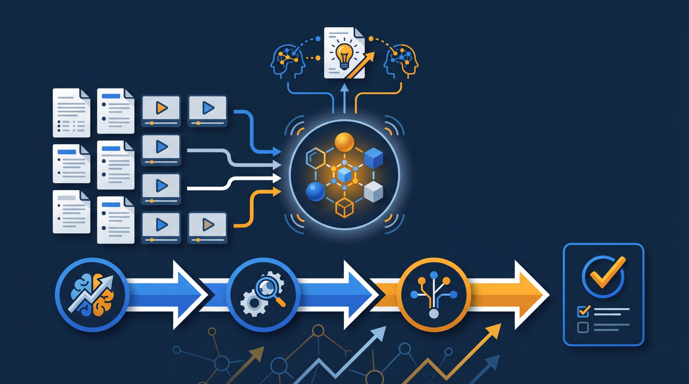

「あの職人さんが辞めたら、もう同じものは作れない」「ベテランの勘に、品質がかかっている」——こうした不安を抱える現場は少なくありません。熟練者が長年かけて身につけた技術は、その人が退職した瞬間に会社から消えてしまいます。この記事では、ベテランのノウハウを動画とマニュアルで形にして次世代へ引き継ぐ、技術伝承の進め方を、製造・建設・サービス業の現場目線で解説します。
技術伝承とは？なぜ今、課題になっているのか
技術伝承とは、ベテラン社員や熟練者が長年の経験で身につけた技術・知識・判断のコツを、次の世代へ引き継いでいくことを指します。図面や仕様書に書かれていない、本人の体に染みついた部分まで含めて受け継ぐところが、難しさの核心です。
この技術伝承が、いま多くの企業で切実な課題になっています。背景にあるのが、熟練者の高齢化と退職です。長く現場を支えてきたベテランが次々と定年を迎える時期に入り、その人たちが持っている技術を、辞める前にどう残すかが問われているわけです。
厚生労働省の能力開発基本調査でも、技能の継承は企業が抱える人材育成上の課題として取り上げられています。特に、現場の技能が製品やサービスの品質を直接左右する製造業・建設業・サービス業では、技術伝承の遅れが、そのまま競争力の低下につながりかねません。
ここで鍵になるのが、暗黙知と形式知という考え方です。暗黙知は、本人は当たり前にできるけれど、言葉にしようとすると説明しづらい、経験から染みついたノウハウのこと。「この音がしたら一度止める」「この手触りなら大丈夫」といった感覚的な部分ですね。形式知は、それをマニュアルや手順書、動画など、本人以外が見ても再現できる形にしたものを指します。技術伝承とは、この暗黙知を少しずつ形式知に翻訳していく作業だと言い換えられます。
なぜ技術伝承は難しいのか
「ちゃんと引き継いでおけばいい」と言うのは簡単ですが、現場で技術伝承が進まないのには、いくつかの理由があります。
1. 技術の多くが言葉になっていない
一番の難しさがこれです。熟練者ほど、作業が体に染みついているので、わざわざ言葉にする機会がありません。聞いても「長年やってると分かる」としか返ってこない。本人も無意識にやっているため、何が重要なのかを自分でも説明できないことがあるんです。言語化されていない技術は、そのままでは伝えられません。
2. 教える時間が取りにくい
ベテランは、たいてい現場の主力です。日々の業務に追われ、若手にじっくり教える時間を取りにくいのが実情です。「忙しいから後で」が積み重なり、いつのまにか退職の時期が来てしまう。技術伝承が後回しになりやすい構造があるわけです。
3. 見て覚えろ、が通用しなくなっている
かつては、若手が長い時間をかけて先輩の背中を見て覚える、というやり方が成り立っていました。けれど、若手の在籍期間が短くなったり、人手が足りずにじっくり見て学ぶ余裕がなかったりする現場では、この方法だけに頼るのは難しくなっています。
ある金属加工の工場では、長年勤めたベテランが一人で特定の仕上げ工程を担っていました。その人の手作業による微調整が品質を支えていたのですが、本人に「コツは何ですか」と聞いても「感覚」としか答えられない。引き継ぎ資料には数行のメモしかなく、いざ退職が決まってから、誰も同じ仕上げができないことに気づいた——こうした事態は、技術伝承を後回しにした現場で起こりがちです。問題が表に出るのが手遅れになってから、という点が、技術伝承のやっかいなところなんですよね。
ベテランの技術を動画で形式知化する4つのステップ
では、どう進めればいいのか。一気に全部をやろうとすると挫折しやすいので、次の4ステップで小さく始めるのがおすすめです。
ステップ1：引き継ぐ技術を1つ選ぶ
最初から全工程を対象にしないことが、続けるコツです。「その人が辞めたら本当に困る技術」を1つだけ選びます。品質を大きく左右する作業や、その人しかできない工程が候補になります。範囲を絞ると、短期間で結果が見えるので、社内の納得も得やすくなります。
ステップ2：ベテランの作業をそのまま記録する
選んだ作業を、ベテランが実際にやっているところをスマートフォンで撮影します。きれいな編集は後回しで構いません。手元の動き、力の入れ方、確認のタイミング、道具の使い方など、本人が無意識にやっていることほど価値があります。撮りながら「今、なぜそうしたんですか」「どこを見ているんですか」と聞いていくと、暗黙知が言葉になって出てきます。
ステップ3：若手が見て分かる形に整える
撮った素材を、若手が見て分かる形に整えます。長い作業は工程ごとに区切り、要点をテロップや短いメモで添える。完璧な映像作品を目指す必要はなく、「初めての人が、これを見て一人でやってみられるか」を基準にすると、過不足のない教材になります。文章では伝わりにくい「動き」や「間」を、動画はそのまま残せるのが強みです。
ステップ4：確認テストと実技チェックをセットにする
動画を見せて終わり、にしないことが定着の分かれ目です。見たあとに、ポイントを問う確認テストや、実際にやらせてみる実技チェックを用意します。どこでつまずくかが分かれば、その部分の説明を足していく。撮って、使って、直すを回していくと、教材は使うほど精度が上がっていきます。

業種別に見る、技術伝承の勘どころ
技術伝承の進め方は、業種によって押さえどころが変わります。代表的な3つの業種で、現場の例を見てみましょう。
- 製造業：手作業の微調整・機械の異音や振動の判断・段取りの手順を動画で残す
- 建設業：施工の手順・安全確認のタイミング・天候や現場条件による判断の違いを記録する
- サービス業：接客の声かけ・お客様の様子の読み取り・トラブル対応の初動を場面ごとに整理する
製造業では、機械の異音や振動から不調を察知する、といった感覚的な判断が品質を支えていることが多いです。こうした判断は文章にしづらいので、ベテランが「この音はおかしい」と気づく場面を動画と音声で記録し、解説をつけると伝わりやすくなります。
建設業では、同じ作業でも天候や現場の条件で進め方が変わる、という判断の部分が伝承の肝になります。標準的な手順を動画にしたうえで、「こういう条件のときはこう変える」というパターンを場面ごとに足していくと、応用力まで引き継ぎやすくなります。
サービス業では、お客様の表情や声のトーンから対応を変える、といった読み取りの技術が暗黙知になりがちです。すべてを教材化するのは難しいものの、「よくある場面」と「そのときの初動」をパターンとして整理すれば、若手の判断の土台を作れます。完璧に置き換えようとするのではなく、置き換えられる部分から外に出していく、という発想が現実的なんですよね。
なお、こうした技術の継承には、IPA（情報処理推進機構）が発信するデジタル活用の知見のように、動画や記録のデジタル化を後押しする公的な情報も参考になります。手作業の世界でも、記録をデジタルで残し、誰でも参照できるようにする工夫が効いてきます。
形式知化した技術を「組織の資産」として残す
ベテランの技術を動画にできたら、次に大事なのが、それをどう管理するかです。せっかく形にしても、各自のパソコンやチャットに散らばってしまうと、結局どこにあるか分からなくなり、また失われてしまいます。
そこで役立つのが、学習管理システム（LMS）です。動画・マニュアル・確認テストを1か所に集約すると、技術が組織の資産としてまとまります。さらに、誰がどこまで習得したかが記録されるので、若手の育成状況も一覧で把握できます。教えた内容が記録として残るので、人材開発支援助成金のように、研修の実施を証明する書類が求められる制度を活用する際にも整理がしやすくなります。
ところで、技術伝承には、思わぬ副産物もあります。それは、教材を作る過程そのものが、ベテラン自身の技術の整理につながることです。「なぜこの順番なのか」「どこを見ているのか」を聞かれて初めて、本人も自分のやり方を言葉にできた、という場面は珍しくありません。技術伝承は、ノウハウを外に出すだけでなく、その技術を磨き直し、改善のきっかけを生む機会にもなっているわけです。
J-Net21などの中小企業向け情報でも、技能の継承と人材育成は経営課題として繰り返し取り上げられています。熟練者に依存している中小企業ほど、技術を組織の資産として残す仕組みは、会社の将来を左右するほど重要だと言えます。
さらに、技術を動画で残しておくと、若手の育成スピードそのものが上がる傾向があります。これまで、ベテランの手が空いたときにしか教われなかった作業を、若手は自分のタイミングで何度でも見返せるようになります。分からなくなったら巻き戻し、できるまで繰り返す。ベテランに同じことを何度も聞く遠慮もなくなり、教わる側の心理的な負担も軽くなるわけです。技術伝承の仕組み化は、ベテランの負担を減らすと同時に、若手が育つ速度を底上げする取り組みでもあるんですよね。
加えて、複数のベテランが同じ作業を別のやり方でこなしている場合、それぞれを動画にして見比べることで、より良い方法を見つけられることもあります。形式知化は、技術を残すだけでなく、現場のやり方を見直し、標準を作り直すきっかけにもなります。
技術伝承を進めるときの注意点
最後に、技術伝承を進めるときに気をつけたい点を挙げておきます。やり方を間違えると、現場の協力を得られず止まってしまうためです。
まず、ベテランに「仕事を取られる」と感じさせないこと。形式知化は本人の価値を下げる作業ではなく、「教える手間から解放し、あなたの技術を会社に残す」取り組みだと、丁寧に伝えることが大切です。撮影や教材化の作業も、本人に丸投げせず、聞き取りながらこちらが引き受ける形にすると、協力を得やすくなります。
次に、完璧を最初から求めないこと。最初の動画は粗くて当然です。使いながら直していく前提で、まず1本作って共有してみる。動き出してしまえば、現場から「この作業も残しておきたい」という声が出てくることも多く、そうなれば自走が始まります。
そして、辞める前に着手すること。技術伝承は、退職が決まってから慌てて始めると間に合いません。まだ余裕があるうちに、少しずつ記録しておく。困る前に外に出しておくことが、いざというときに効いてきます。
まとめ：技術を、人ではなく組織に残す
技術伝承は、ベテランの頭の中にある暗黙知を、動画やマニュアルという形式知に変え、組織に残していく取り組みです。熟練者が辞めても品質を保てる状態を作ることが、その核心になります。
一度に全部をやろうとせず、困る技術を1つ選び、撮って、整えて、確認テストや実技チェックまでつなげる。そしてできた教材を学習管理システムに集約し、組織の資産として運用していく。この流れができると、技術は「人に依存するもの」から「組織に蓄積されるもの」へと変わっていきます。
技術伝承の遅れは、品質や競争力に直結する問題です。だからこそ、まだ余裕のある今のうちに、まずは「その人が辞めたら困る技術」を1つ書き出すところから始めてみてください。なお、こうした技術の動画化や研修の整備には、人材開発支援助成金のように、訓練にかかった経費や賃金の一部を国が助成する制度を活用できる場合があります。仕組みづくりと費用面の両方から、自社に合った進め方を検討してみるとよいでしょう。
よくある質問
ベテラン社員や熟練者が長年の経験で身につけた技術・知識・判断のコツを、次の世代へ引き継いでいくことを指します。図面やマニュアルに書かれていない、本人の体に染みついた部分まで含めて受け継ぐことが課題になります。製造・建設・サービスなど、現場の技能が品質を左右する業種で特に重要視されています。
熟練者の技術の多くが、言葉にしにくい経験的なノウハウ（暗黙知）であることが大きな理由です。本人も無意識に行っているため、聞いても「長年やれば分かる」としか説明できないことがあります。また、教える時間が取りにくく、引き継ぎが後回しになりやすいことも一因です。
技術の多くは、手の動き・力の入れ方・確認のタイミングなど、文章では伝わりにくい要素を含みます。動画なら、その動作をそのまま記録でき、若手は何度でも見返せます。文書マニュアルだけでは抜け落ちる「動き」や「間」を残せる点が、動画の強みです。
「あなたの仕事を奪う」のではなく「教える手間を減らし、あなたの技術を会社に残す」という伝え方が有効なことが多いです。撮影や編集の負担を本人にかけず、聞き取りながらこちらが教材化を引き受ける形にすると、協力を得やすくなります。
まずは「その人が辞めたら本当に困る技術」を1つ選ぶことから始めると着手しやすいです。その作業をベテランが行う様子をスマートフォンで撮影し、なぜそうするのかを聞き取りながら記録します。最初から完璧を目指さず、撮って共有して直す、を繰り返すほうが定着しやすい傾向があります。
個人のパソコンやチャットに散らばると、再び失われてしまいます。動画・マニュアル・確認テストを1か所に集め、誰がどこまで習得したかを記録できる学習管理システム（LMS）に置くと、技術を組織の資産として運用しやすくなります。研修の実施を証明する記録としても役立ちます。